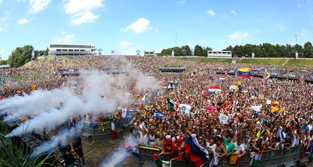

Tomorrowland Day One: How the spectacle began


Tomorrowland kicked off in characteristically opulent style on Friday, delivering on the next-level spectacle expected of the festival. As predicted, the largest contingent of the crowd was drawn to the colossal mainstage, where they welcomed a battalion of the biggest names in EDM all day long. The magnetism of that natural amphitheatre, made famous across the world by ID&T’s big-budget after-movies, had a noticeable effect on the other stages across the site.
While in 2012 the 60,000 ravers seemed to sprawl more evenly around the De Schorre National Park on day one, this time the mainstage worship was stronger than ever. The sea of flags, girls on shoulders and raised hands stretched in every direction. (When the DJs are just one tiny detail inside a volcanic landscape that can fire plumes of smoke and lasers, it’s not hard to be transfixed.)
“Liv can’t lift her arms, but can beat match and mix,” Aussie duo Nervo cheerily told fans who worried she’d be spending Tomorrowland in a hospital bed. The pair proved a mainstage favourite early in the day, building on their reputation for delivering killer party sets.
Russian prodigy Arty delivered a cavalcade of anthems not long after, peaking with his own single “Together We Are” and powering remix of Zedd’s “Clarity”. Later, Sebastian Ingrosso warmed up at sundown for the spectacular fireworks and pyrotechnics that were to come (each Swedish House Mafioso is set to perform solo across the weekend), while Tiesto delivered his slick crowd-pleasing formula as the lasers descended, drawing heavily on his back catalogue in the final stretch with his remix of “Silence” and “Adagio for Strings”.
If you were curious to venture beyond the mainstage and soak up the stunning details across the rest of the national park, L.A. show-man Steve Aoki was captaining a Dim Mak tent stacked with rapid-fire sets (he’ll return to close the mainstage on Sunday night).
Meanwhile, Carl Cox & Friends took control at the Ferris Wheel stage, this year featuring a towering butterfly design. As Aoki was dousing the front row in champagne over at his tent, his polar opposite John Digweed delivered in his even, consummate style late in the afternoon with some tough techno that eased towards melodic progressive at the tail-end, while Marco Carola’s cancellation meant that both Loco Dice and Cox himself were able to pump out extended sessions.
The ‘Garden of Madness’ stage debuted for the first time, floating on a massive constructed island on the lake and visually defined by the gorgeous floral displays hanging from the ceiling – all timed to bloom with the start of the festival by famous landscaper Daniel Orst, with Afrojack playing a centrepiece set in the evening and LMFAO’s Redfoo bringing a manic energy with his crew of neon-clad ring-ins.
For those after more underground sounds, the Paradise arena at the Buddhist-themed stage right on the lake’s edge delivered, with Jamie Jones locking into his signature tech-house groove in the closing slot. Meanwhile, Markus Schulz fronted up for his epic marathon 12-hour set at the tent up the hill behind the mainstage, keeping the propulsive progressive trance going for a crowd that ebbed and swelled across the day.
The Tomorrowland TV live stream continues on Saturday, with sets broadcast from Avicii, Benny Benassi, Chuckie, Martin Solveig, Nicky Romero and Pete Tong. Stay tuned for more wrap-ups from Team ITM.